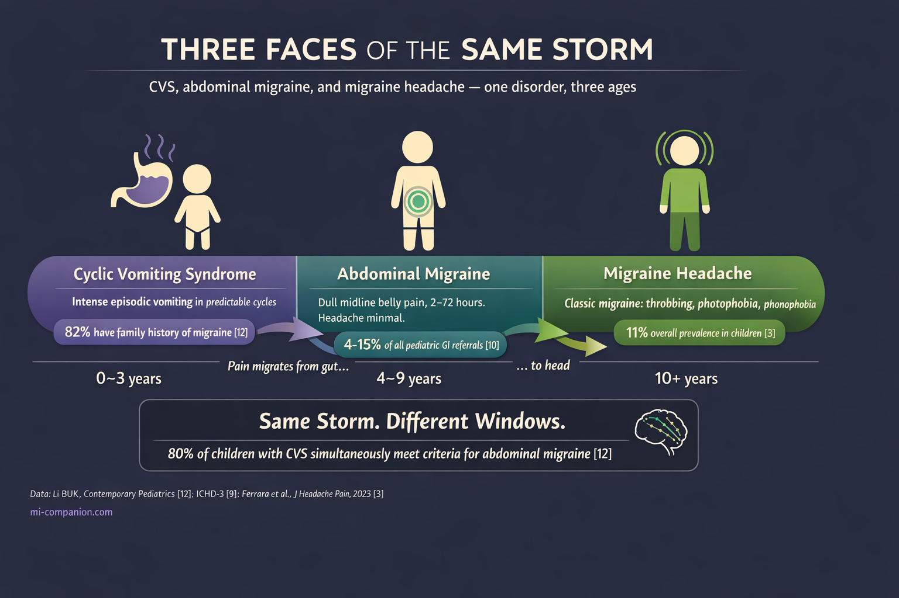
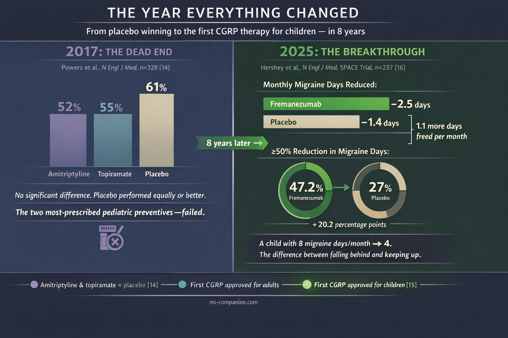

By Rustam Iuldashov
30 years lived experience with chronic migraine | Sources: 25 peer-reviewed references including Lancet Neurology (n=204 countries), N Engl J Med (n=328; n=237), J Headache Pain (n=48 studies), JAMA, Brain Sciences | Last updated: March 7, 2026
Medical Review: This content is based on peer-reviewed research from Lancet Neurology, New England Journal of Medicine, JAMA, Brain Sciences, Journal of Headache and Pain, European Journal of Pediatrics, Pediatric Neurology, and Journal of Pediatric Gastroenterology and Nutrition.
Important Notice: This article is for informational purposes only and does not replace professional medical advice. The author is not a licensed physician or healthcare professional. Always consult your child’s doctor before making changes to their treatment plan.
Key Takeaways
- Migraine is the #1 neurological cause of disability in children and adolescents worldwide[1, 24]
- Before puberty, boys get migraine more often than girls — the ratio reverses after hormonal changes[4]
- Abdominal migraine, cyclic vomiting syndrome, and migraine headache may be three age-dependent phases of the same disorder[12]
- In August 2025, fremanezumab (Ajovy) became the first CGRP therapy approved for pediatric migraine prevention (ages 6–17, ≥45 kg), based on the SPACE trial (n=237)[15, 16]
- CBT combined with medication shows sustained improvement in 86–88% of pediatric chronic migraine patients at one year[4, 18]
- Self-compassion is measurably therapeutic for chronic pain: less interference, better adjustment, fewer depressive symptoms[21, 23]
The Boy in the Dark Room
He’s seven. He’s lying on the bathroom floor because the tile is cool and everything else is too loud. His mother stands in the doorway, trying to decide if this is real.
It is.
Migraine is the leading cause of neurological disability in children and adolescents worldwide.[1] Not one of many causes. The first. The Global Burden of Disease 2021 analysis — covering 204 countries and 37 neurological conditions — places migraine above every other neurological disorder in disability among young people.[1, 24] It affects 1.16 billion people globally.[1] Roughly one in nine children in any classroom has it.[3]
And yet. Pediatric headache remains the most underfunded pediatric disease category when measured against public research dollars.[2] The most disabling condition gets the least attention. That’s not a paradox. That’s a failure.
If you grew up with migraine, you know this failure intimately. You heard the words: You’re too young for headaches. It’s just growing pains. You’re looking for attention. If your child now holds their head and cries the same way you once did — this article exists so you never have to guess what’s happening again.
Before Puberty, It’s the Boys
Most people assume migraine is a woman’s disease. Before puberty, it’s the opposite.
Pre-pubertal boys have higher migraine prevalence than girls.[4] The ratio flips after puberty, driven by estrogen fluctuations and shifts in follicle-stimulating hormone that amplify female migraine sensitivity.[4] A school-based study found 10.4% of children met migraine criteria — and 1.7% already qualified as chronic, meaning 15 or more headache days per month.[4]
Fifteen days. That’s every other day. In a child.
The damage compounding fast. Children with migraine miss an average of 7.8 school days per three-month period.[5] In the US alone, pediatric migraine erases over 150,000 school days annually.[6] Thirty-seven percent of children with migraine report poor performance during attacks; 46% of adolescent headache patients have documented school problems.[7] And in clinical samples, 82% of adolescents with primary headache met criteria for a DSM psychiatric diagnosis — most commonly anxiety.[8]
That’s not two separate problems. That’s one brain, fighting on two fronts.
The Migraine That Hides in the Belly
A six-year-old doesn’t say, “I’m experiencing photophobia with unilateral throbbing pain.” A six-year-old says, “My tummy hurts.” And then nobody looks for migraine.
They should.
⚠️ When to Seek Emergency Help
Any sudden explosive headache in a child — especially if described as “the worst ever” — demands emergency evaluation. Period. No exceptions. The same applies to headache with fever and stiff neck, headache after a head injury, and headache accompanied by confusion, weakness, vision loss, or difficulty speaking.
If your child is experiencing any of these symptoms, call your local emergency number immediately. Do not use this article to self-diagnose.
The International Classification of Headache Disorders (ICHD-3) recognizes several conditions in children that are migraine wearing a disguise — episodic syndromes that speak through an immature nervous system before the brain develops its adult dialect.[9] The most common:
Abdominal migraine accounts for 4–15% of all pediatric gastroenterology referrals.[10] Dull pain around the belly button. Moderate to severe. Lasts 2 to 72 hours. No headache — or not much of one. But follow these children forward, and up to 70% develop classic migraine by age 9 or 10.[10] The belly pain wasn’t a mystery. It was a prologue.
Cyclic vomiting syndrome (CVS) brings intense, stereotypical episodes of nausea and vomiting in predictable cycles, with perfectly normal stretches in between.[11] New 2025 clinical guidelines from NASPGHAN now strongly recommend anti-migraine agents as first-line abortive therapy for CVS in children with a personal or family history of migraine.[11] That history is present in 82% of cases.[12]
Now, the finding that reframes everything: CVS, abdominal migraine, and migraine headache may be three age-dependent phases of the same disorder.[12] Vomiting dominates in the youngest children. Belly pain takes over in the middle years. Headache arrives last. Nearly 80% of children with CVS simultaneously meet diagnostic criteria for abdominal migraine.[12] Same storm. Different windows.
Even infancy holds clues. Benign paroxysmal torticollis — spontaneous head tilting in babies — and benign paroxysmal vertigo — sudden episodes of dizziness in toddlers — are both now classified as migraine-associated syndromes.[4, 9] If your infant had unexplained episodes of head tilting and distress, and you now live with migraine, there’s a connection nobody told you about.

A Different Brain, a Different Disease
A child’s brain is still under construction. That single fact changes everything about how migraine behaves in young patients.[13]
Attacks are shorter. ICHD-3 sets the pediatric window at 2–72 hours, versus 4–72 in adults.[9] A two-hour migraine is real migraine. Don’t dismiss it.
Pain spreads both ways. Adults typically feel migraine on one side. Children often feel it across both temples or the forehead[4, 9] — which leads doctors straight to the wrong diagnosis: tension headache.
Words fail. Preschoolers can’t describe what they feel. Toddlers become irritable, cry without obvious cause, or demand a dark room.[13] Infants may only show “head banging.”[13] When a child can’t articulate pain, the pain becomes invisible.
The gut speaks first. Gut microbiota dysbiosis — an imbalance in the bacterial ecosystem of the intestines — is emerging as a contributor to pediatric migraine.[4] The gut-brain axis communicates bidirectionally, and in children, it may explain why so many migraines first appear as gastrointestinal chaos before they ever become a headache.
The Year Everything Changed
For decades, treating migraine in children meant borrowing adult drugs, cutting doses in half, and hoping. In 2017, a landmark trial published in the New England Journal of Medicine delivered a devastating verdict: amitriptyline and topiramate — the two most widely prescribed preventives for pediatric migraine — were no more effective than placebo.[14] Three hundred twenty-eight children. Multicenter. Double-blind. Placebo won.
That left families with almost nothing.
Then came August 2025. The FDA approved fremanezumab (Ajovy) for preventive treatment of episodic migraine in children aged 6–17 weighing at least 45 kg[15] — the first and only CGRP-targeted therapy ever approved for pediatric migraine.[15]
CGRP — calcitonin gene-related peptide — is the molecule at the center of modern migraine science. It drives the pain signaling and blood vessel dilation during an attack. Fremanezumab is a monoclonal antibody that binds CGRP before it can reach its receptors, interrupting the cascade at its source.[16]
The Phase III SPACE trial enrolled 237 children, randomized and placebo-controlled.[16] Fremanezumab reduced monthly migraine days by 2.5 versus 1.4 with placebo.[16, 17] Nearly half — 47.2% — of treated children achieved at least a 50% reduction in migraine days, compared to 27% on placebo.[16, 17] Safety matched the known adult profile: injection-site reactions, mostly.[15]
Translate those numbers into a life. A child having 8 migraine days a month drops to 4. That’s the distance between falling behind in school and keeping up. Between eating lunch alone and sitting with friends.

What Works Without a Needle
The strongest non-drug evidence in pediatric migraine belongs to cognitive behavioral therapy. A randomized trial showed CBT combined with amitriptyline cut headache frequency and disability in children with chronic migraine, with improvements sustained in 86–88% of participants at one year.[4, 18] A separate meta-analysis confirmed: CBT significantly reduces both frequency and disability in pediatric patients.[4]
Beyond the therapist’s office, the evidence points to interventions so simple they’re easy to underestimate:
Consistent sleep.
Sleep disturbance is both a migraine trigger and a comorbidity, with the relationship running in both directions.[8] Same bedtime. Same wake time. Every day.
Water and breakfast.
Skipping breakfast and poor hydration are among the most common — and most fixable — headache triggers in adolescents.[10, 19]
Movement.
At least three days a week of moderate exercise.[19] It releases endogenous pain-modulating compounds and improves sleep architecture — both directly relevant to migraine control.
Screen boundaries.
Longitudinal school-based research links digital media use with adolescent headache.[20] Screens don’t cause migraine. But they contribute to the trigger environment — particularly through light exposure, posture, and disrupted sleep.
Riboflavin.
A randomized controlled trial of 98 adolescents found that 400 mg daily of vitamin B2 for 12 weeks improved headache frequency, duration, and disability scores versus placebo.[19] Magnesium supplementation is promising but needs stronger evidence.
None of this replaces medical care. All of it makes medical care work better.
The Part That Doesn’t Fit in a Clinical Trial
There’s a wound that no drug addresses and no meta-analysis captures.
When you’re six and your head hurts so much you can’t play — and no one can see anything wrong — you start to wonder if something is wrong with you. When adults say it’s nothing, or you’re exaggerating, or you should try harder, you learn a devastating lesson: your pain doesn’t count.
Science is catching up to what lived experience always knew. Children with migraine show roughly a fourfold increase in internalizing disorders — anxiety, depression — compared to peers.[8] The relationship runs both ways: migraine feeds anxiety, anxiety fuels migraine. In community studies, mental health remained poorer and school absence stayed higher at three-year follow-up.[8]
But here’s where the research offers something unexpected. Self-compassion — directing warmth and kindness toward yourself in the face of suffering, rather than self-criticism — turns out to be measurably therapeutic. A systematic review of self-compassion in chronic pain found it associated with less pain interference, better social adjustment, and fewer depressive symptoms.[21] Compassion-focused therapy helps people navigate chronic illness with greater resilience and adaptability.[22] And a randomized controlled trial comparing a Mindful Self-Compassion program to CBT for chronic pain found the self-compassion group improved more in anxiety, pain acceptance, and emotional well-being.[23]
What does this mean for a child with migraine? Something profound. Teaching a child that their migraine is a neurological condition — not a character flaw, not a failure of willpower, not something they caused — isn’t just kind. It may be therapeutic. Helping them build compassion for themselves, rather than shame about themselves, can change not just how they feel about pain, but how much power it holds over their life.
To the Child You Were
There are things you deserved to hear.
Your pain was real. It was never “just a headache.” It was the most disabling neurological condition in your age group — confirmed by every global health analysis published since.[1, 24] The adults around you didn’t have the language or the science. That was their limitation. Not yours.
You were not weak. You were doing something extraordinarily hard: growing up while managing a condition that brings adults to their knees. You’re still here.
And if you now have a child who holds their head the way you once did, or whose stomach knots in strange cyclical patterns, or who throws up on car rides no one else finds difficult — you understand something the rest of the world is only now learning.
You know what it feels like from inside.
That’s not a wound. It’s a compass.
⚕️ Important Medical Disclaimer
This article is for informational and educational purposes only and does not constitute medical advice, diagnosis, or treatment. The author, Rustam Iuldashov, is not a licensed physician, neurologist, or healthcare professional. He is a patient advocate with 30 years of personal experience living with chronic migraine.
All clinical claims in this article are sourced from peer-reviewed research published in indexed medical journals. Study designs and sample sizes are noted where applicable.
Always consult a qualified healthcare provider for questions about your child’s health, migraine treatment, or medication decisions.
This content was last reviewed for accuracy on March 7, 2026.
References
- GBD 2021 Nervous System Disorders Collaborators. “Global, regional, and national burden of disorders affecting the nervous system, 1990–2021.” Lancet Neurol, 23:344–381 (2024). doi:10.1016/S1474-4422(24)00038-3. Study design: Systematic analysis. n=204 countries, 37 neurological conditions.
- Orr SL. “Headache in children and adolescents.” Continuum (Minneap Minn), 30(4) (2024). Study design: Narrative review (AAN continuing education).
- Ferrara P, Bottaro G, Bersani I, et al. “Primary headache epidemiology in children and adolescents: a systematic review and meta-analysis.” J Headache Pain, 24:19 (2023). doi:10.1186/s10194-023-01556-7. Study design: Systematic review and meta-analysis. n=48 studies, ages 8–18.
- Haghighi FS, Rahmanian M, Namiranian P, et al. “Current trends in pediatric migraine: clinical insights and therapeutic strategies.” Brain Sci, 15(3):280 (2025). doi:10.3390/brainsci15030280. Study design: Comprehensive review.
- Canfora F, Pallotto A, Davis D, et al. “More than a headache: lived experience of migraine in youth.” Pediatr Neurol, 146:79–84 (2023). doi:10.1016/j.pediatrneurol.2023.05.019. Study design: Qualitative study. n=30 dyads, Pediatric Migraine Registry.
- Medscape/Emedicine. “Pediatric headache: background, pathophysiology, etiology.” Updated 2024. Study design: Clinical reference. National Health Interview Survey data.
- Michigan Head Pain and Neurological Institute (MHNI). “Managing headaches and school.” Study design: Clinical resource citing multiple pediatric headache studies.
- Faedda N, Baglioni V, Natalucci G, et al. “Beyond the pain: psychopathological and neuropsychological dimensions of primary headaches in pediatric populations.” Life, 15(10):1641 (2025). doi:10.3390/life15101641. Study design: Systematic review. PubMed/Scopus/Embase, 2015–2025, ages 0–18.
- Headache Classification Committee of the IHS. “The International Classification of Headache Disorders, 3rd edition.” Cephalalgia, 38(1):1–211 (2018). doi:10.1177/0333102417738202. Study design: Diagnostic classification standard.
- “Migraine in children and adolescents.” Practical Neurology, May-June (2023). Study design: Clinical review.
- Karrento KL, Adams JB, Engel A, et al. “North American Society for Pediatric Gastroenterology, Hepatology, and Nutrition 2025 guidelines for management of cyclic vomiting syndrome in children.” J Pediatr Gastroenterol Nutr, 80:1028–1061 (2025). doi:10.1002/jpn3.70020. Study design: GRADE-based clinical practice guideline with systematic reviews.
- Li BUK. “New hope for children with cyclic vomiting syndrome.” Contemporary Pediatrics, updated 2025. Study design: Clinical review. CVS natural history and migraine overlap.
- Morariu TS, Teleanu RI, Rosca O, et al. “Treatment of pediatric migraine: a review.” Maedica (Bucur), 11(2):136–143 (2016). Study design: Narrative review.
- Powers SW, Coffey CS, Chamberlin LA, et al. “Trial of amitriptyline, topiramate, and placebo for pediatric migraine.” N Engl J Med, 376(2):115–124 (2017). doi:10.1056/NEJMoa1610384. Study design: RCT. n=328, multicenter, double-blind, placebo-controlled.
- Teva Pharmaceutical Industries Ltd. “FDA approves expanded indication for AJOVY (fremanezumab-vfrm), the first anti-CGRP preventive treatment for pediatric episodic migraine.” Press release. August 6, 2025.
- Hershey AD, Szperka CL, Barbanti P, et al. “Efficacy and safety of fremanezumab for the preventive treatment of episodic migraine in children and adolescents: SPACE trial.” N Engl J Med (2025). Study design: Phase III RCT. n=237, ages 6–17, double-blind, placebo-controlled.
- Cincinnati Children’s Hospital Medical Center / Research Horizons. “Adult med also reduces monthly migraine days for many children.” January 2026. Institutional summary of SPACE trial publication.
- Powers SW, Kashikar-Zuck SM, Allen JR, et al. “Cognitive behavioral therapy plus amitriptyline for chronic migraine in children and adolescents: a randomized clinical trial.” JAMA, 310(24):2622–2630 (2013). doi:10.1001/jama.2013.282533. Study design: RCT. n=135, multicenter, 1-year follow-up.
- “Pediatric migraine care: bridging gaps, overcoming barriers, and advancing solutions.” Eur J Pediatr, 184 (2025). doi:10.1007/s00431-025-06199-1. Study design: Narrative review. Includes riboflavin RCT (n=98).
- Humberg C, Neß V, Rau L-M, Wager J. “Is there a long-term link between digital media use and adolescent headaches? A longitudinal school-based study.” Children, 11:1549 (2024). doi:10.3390/children11121549. Study design: Longitudinal study.
- Lanzaro C, Carvalho SA, Lapa TA, Valentim A, Gago B. “A systematic review of self-compassion in chronic pain: from correlation to efficacy.” Span J Psychol, 24 (2021). doi:10.1017/SJP.2021.40. Study design: Systematic review. MEDLINE, EMBASE, PsycINFO, Cochrane.
- Gilbert P. “The origins and nature of compassion focused therapy.” Br J Clin Psychol, 53(1):6–41 (2014). doi:10.1111/bjc.12043. Study design: Theoretical framework.
- Torrijos-Zarcero M, Mediavilla R, Rodríguez-Vega B, et al. “Mindful self-compassion program for chronic pain patients: a randomized controlled trial.” Eur J Pain, 25(4):930–944 (2021). doi:10.1002/ejp.1734. Study design: RCT. MSC vs CBT, 8-week intervention.
- Peres MFP, Sacco S, Pozo-Rosich P, et al. “Migraine is the most disabling neurological disease among children and adolescents, and second after stroke among adults: a call to action.” Cephalalgia, 44(8):3331024241267309 (2024). doi:10.1177/03331024241267309. Study design: Editorial/commentary on GBD 2021.
- Wang Q, Luo R, Wen Q. “Rising trends in the burden of migraine among children and adolescents: a comprehensive analysis from 1990 to 2021 with future predictions.” Front Public Health, 13:1634098 (2025). doi:10.3389/fpubh.2025.1634098. Study design: Epidemiological trend analysis. Bayesian age-period-cohort modeling.

How We Create Content
- Peer-reviewed sources only. Lancet Neurology, New England Journal of Medicine, JAMA, Brain Sciences, Journal of Headache and Pain, European Journal of Pediatrics, Pediatric Neurology, Journal of Pediatric Gastroenterology and Nutrition.
- Study transparency. Study design and sample sizes noted for all clinical references.
- Source verification. All claims backed by numbered references with DOI links.
- Experience + Science. 30 years personal migraine experience — beginning in childhood — combined with peer-reviewed evidence.
- Regular updates. Articles reviewed when significant new research emerges.
- No conflicts of interest. No funding from pharmaceutical companies or medical device manufacturers.
Track Your Child’s Triggers. Understand Their Pattern.
Migraine Companion helps you log attacks, track triggers, and build the personal dataset that turns unpredictable pain into actionable patterns — for you or the child you’re caring for.
Last reviewed: March 2026
Next scheduled review: September 2026